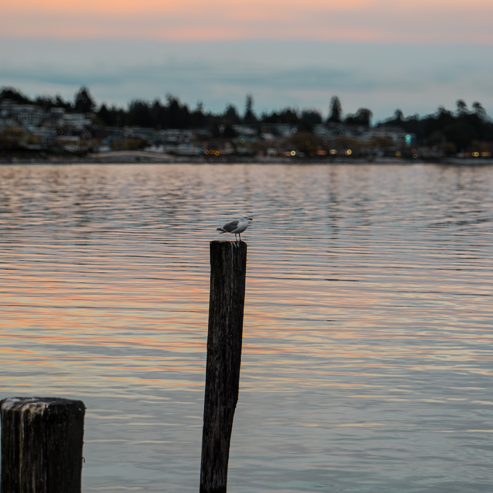
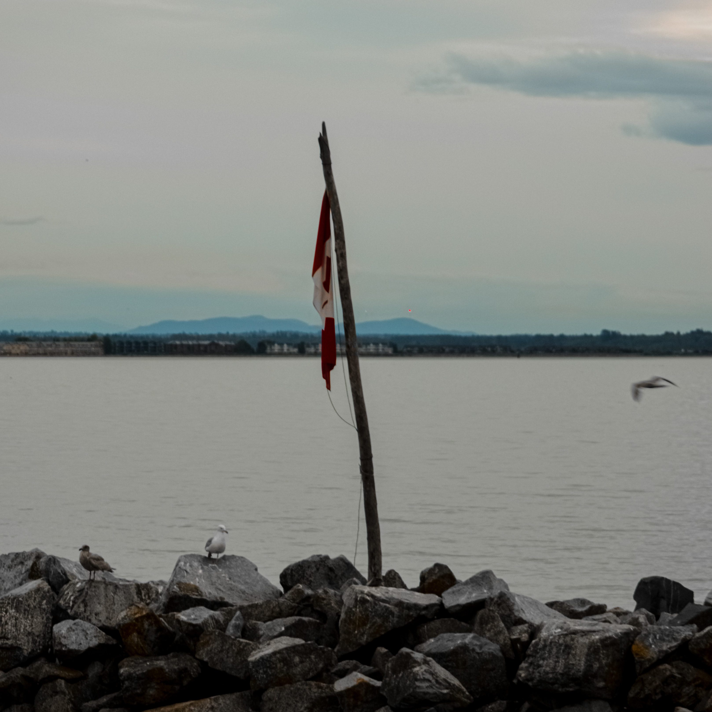
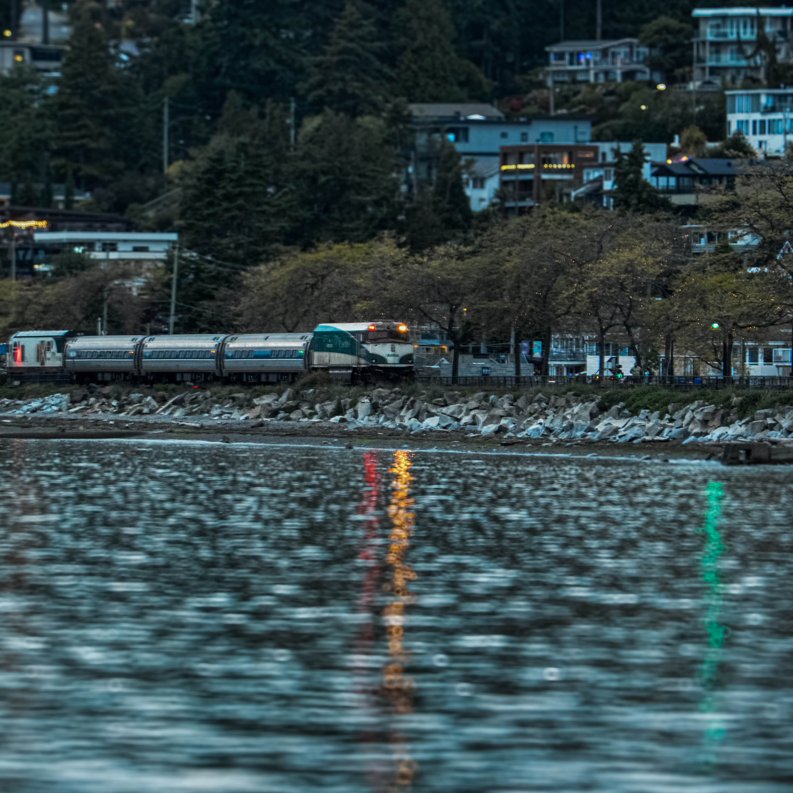
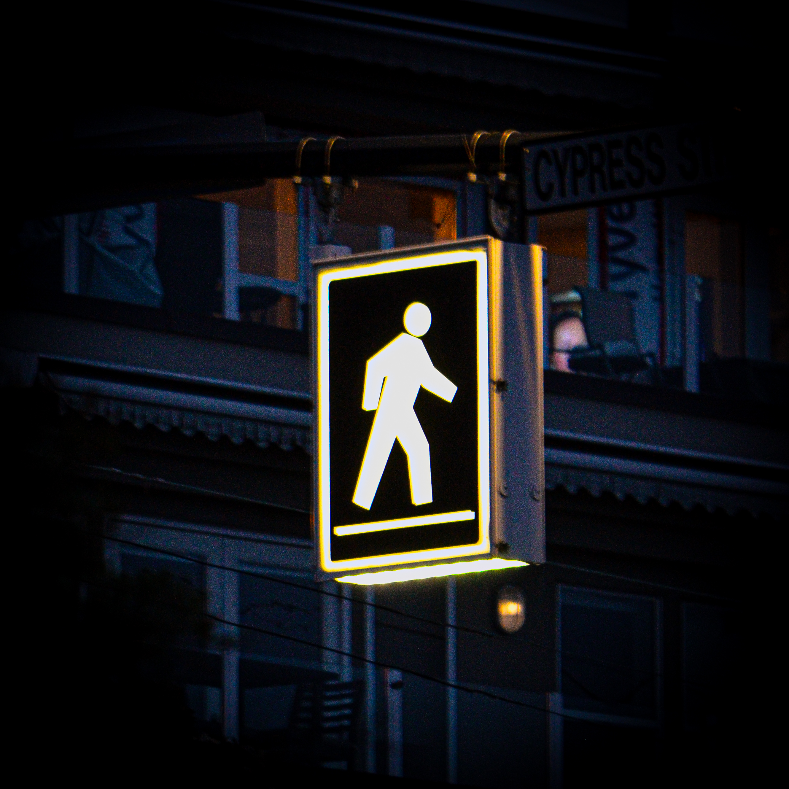
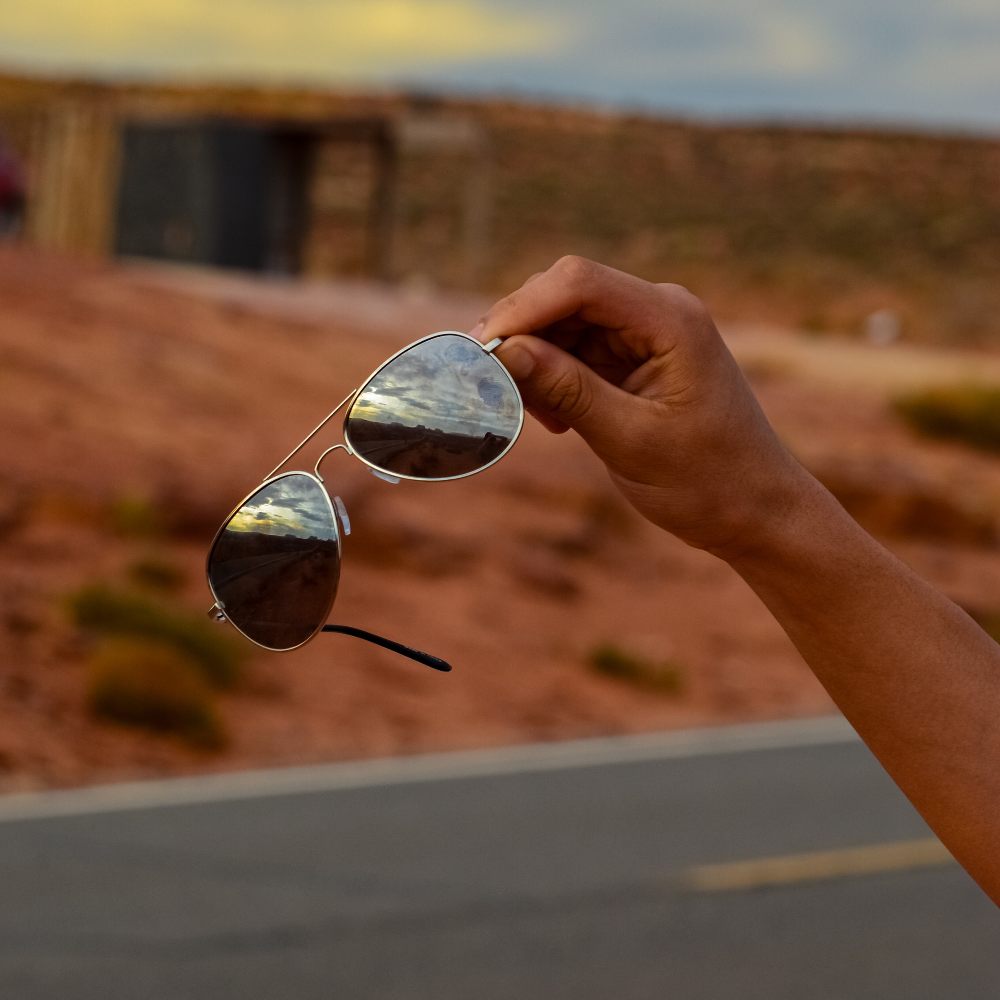
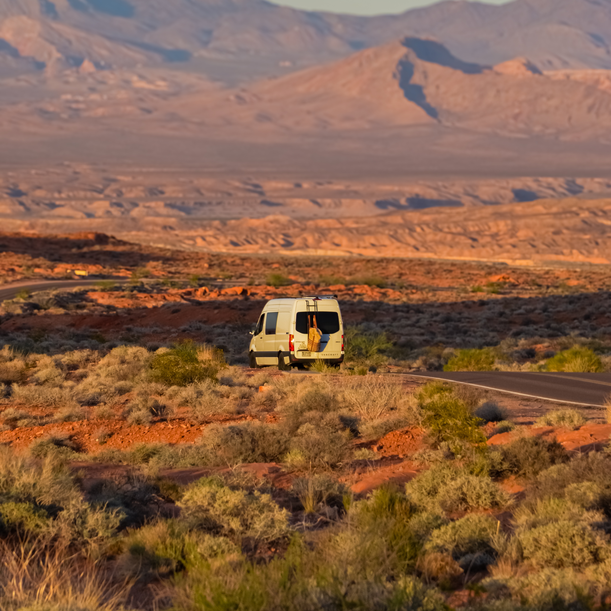
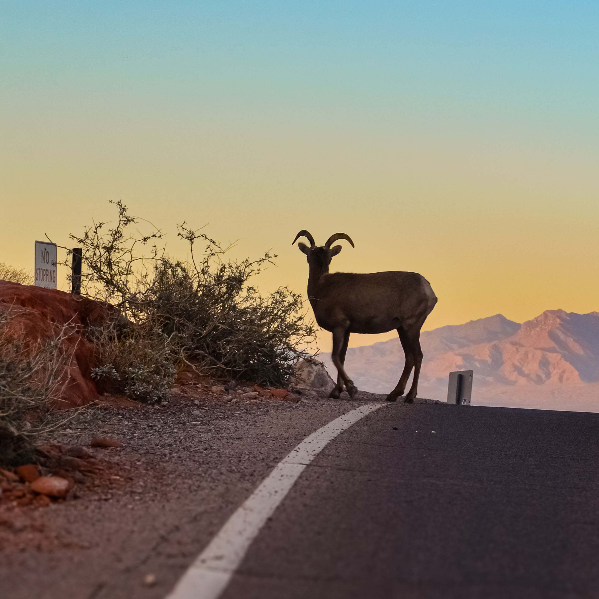

Portfolio











About Me
Hey, I'm Devansh. I shoot what feels real to me—landscapes, city scenes, and the little moments most people walk past. I love natural light, honest colors, and finding a story in the ordinary. No fancy gear, just a camera and curiosity. If you vibe with my style, let's connect.
Contact / Inquiry
Want to work together, collaborate, or buy a print? Drop me a message below or email me directly.